The Sims 4 · mod · agentes de IA
Um agente de IA fez um mod de The Sims 4 e testou dentro do jogo
O mod cola uma foto no rosto do Sim, chapada e sem perspectiva. O agente escreveu o código, montou o acessório 3D e jogou o jogo para conferir, operando um Windows remoto por captura de tela e clique.
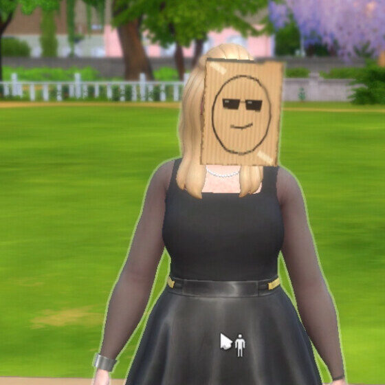
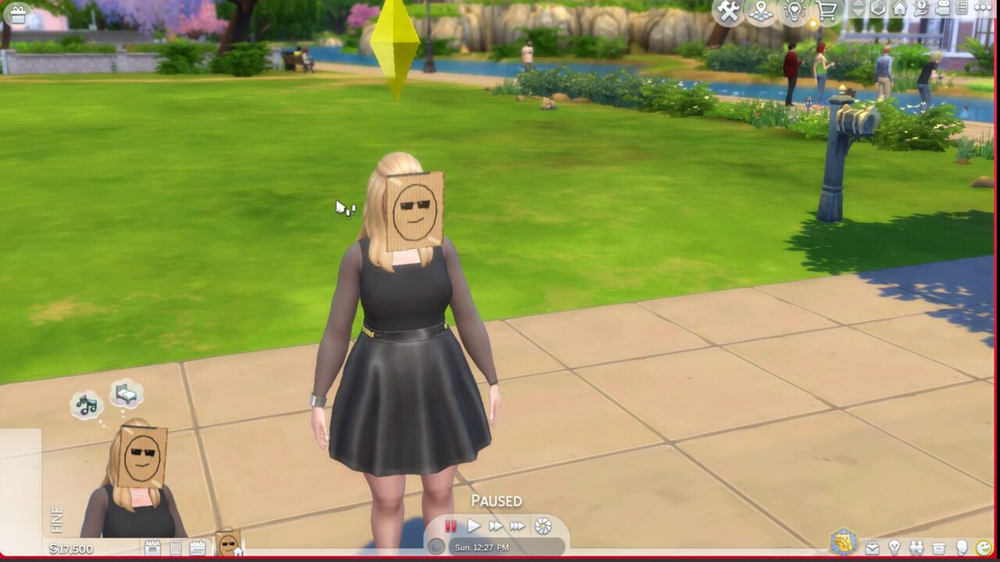
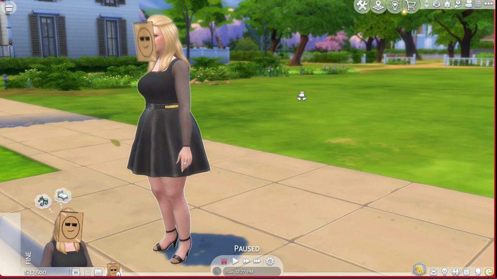
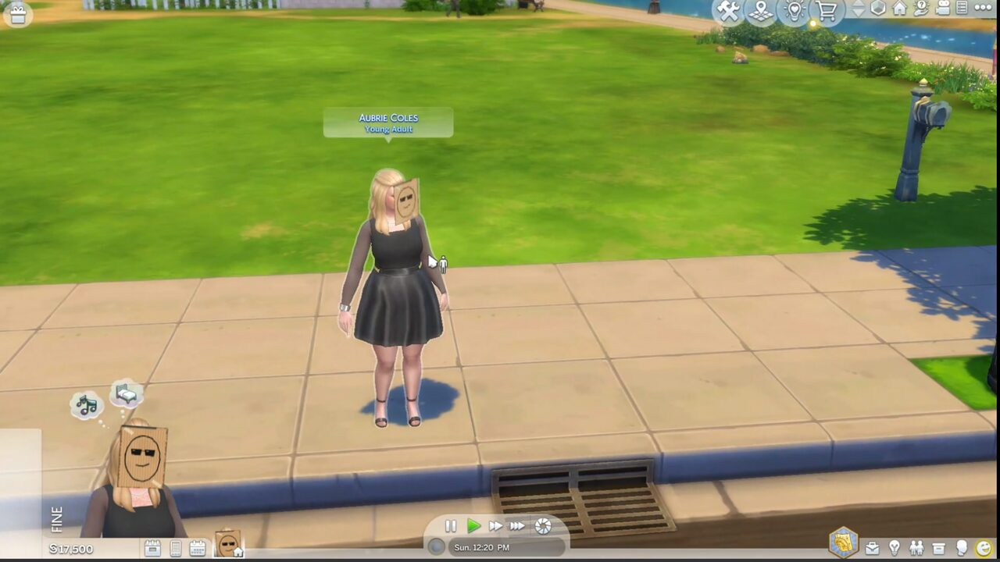
Cronologia
Horários de Brasília. Julho vem do histórico do git e das notas da tarefa; outubro, do registro completo da sessão.
-
17 de julho · 19:21
O pedido
Um mod que atribui uma foto de perfil a cada Sim e a mostra sobre o rosto, em 2D puro. O pedido dizia: "o tosco é feature, não bug". Também pedia repositório público, documentação, testes automatizados e artefatos que funcionassem no Windows, gerados num laptop Linux.
-
17 de julho · 19:39 a 20:29
Primeira hora: pesquisa, código e release, sem abrir o jogo
A pesquisa trouxe duas restrições. O motor do jogo não tem "billboard" (algo que vira sempre para a câmera) para nada preso ao Sim. E um script sozinho não consegue carregar uma imagem solta. O desenho final: um acessório de cabeça plano, um script em Python 3.7 (a versão embutida no jogo) e uma ferramenta em Node.js para converter fotos.
Uma hora e oito minutos depois do pedido havia repositório público, 55 testes, documentação em HTML e uma versão alfa publicada. Faltava a peça 3D, que só uma ferramenta gráfica de Windows, o Sims4Studio, sabe criar.
-
20 a 24 de julho
Tentativa no Linux
O jogo foi comprado e instalado no laptop Linux, via Steam e Proton. O agente compartilhou a tela por VNC para a compra, e depois instalou o Sims4Studio no Wine, com .NET 6, clicando por
xdotool.wine: stack overflow (Sims4Studio fecha ao abrir)
Proton da Steam: requires GLIBC_2.38O Wine da distribuição era velho demais para o .NET 6, e o Proton exigia uma biblioteca do sistema mais nova. O agente parou e deixou pronto o comando para instalar um Wine atual. Em paralelo, o CI ficou fora do repositório: o token do GitHub não tinha permissão para arquivos de workflow.
-
agosto e setembro
Parado
A tarefa ficou registrada com cinco passos pendentes.
-
22 de outubro · 19:42
Pedido por voz: "agora eu tenho um computador com Windows"
O pedido foi ditado no celular. Um agente coordenador reabriu a tarefa e subiu um agente novo: Claude Opus 5.5, com esforço de raciocínio médio, que leu as notas de julho e começou.
Primeiro achado: o token do GitHub já tinha a permissão que faltava. O CI voltou em dois minutos, com os três jobs verdes.
-
23 de outubro · manhã
Entrando no Windows pelo Moonlight
O dono disse só que o PC tinha Moonlight. O agente achou a máquina na rede pelo anúncio mDNS do Sunshine (o servidor de streaming), instalou o cliente no Linux e pediu um PIN. Os dois primeiros pedidos de pareamento se atropelaram; o terceiro deu certo.
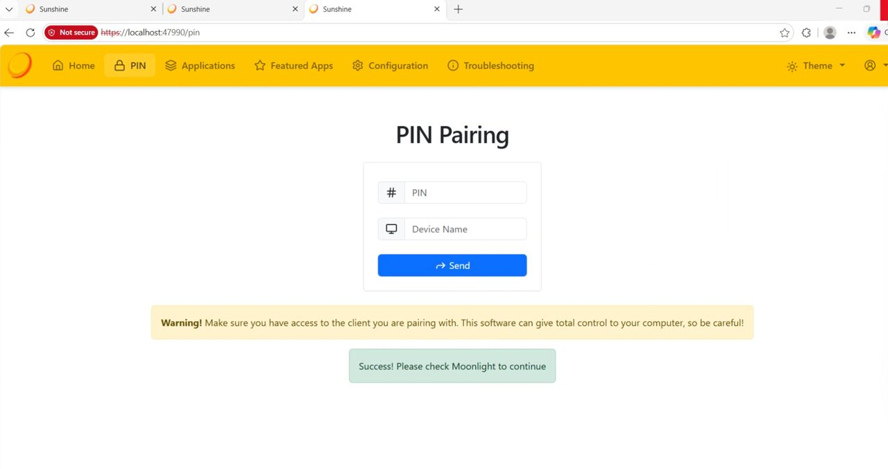
O único passo no Windows que exigiu um humano: digitar o PIN. Depois, mais três problemas até conseguir trabalhar:
- As capturas saíam pretas. A decodificação de vídeo por hardware desenhava fora do alcance da captura. Com decodificação por software, a imagem apareceu.
- O teclado traduzia errado:
digitado: powershell
chegou: rowershepp- O
xdotoolescolhia teclas de outro layout. O agente passou a mandar códigos físicos de tecla. Ainda assim a barra/chegava como\; passou a ir por AltGr+Q. - Num app WPF, o clique só selecionava um item da lista se o botão ficasse pressionado uns 150 ms.
-
23 de outubro · 08:30
Instalando sem senha de administrador
.NET 6 só para o usuário, Blender 3.6 portátil e Sims4Studio, cada um baixado e descompactado pelo PowerShell remoto. Os arquivos do Linux iam por um pequeno servidor HTTP aberto só na rede privada.
-
23 de outubro · 08:37 a 09:04
A placa
No Sims4Studio, o agente clonou uns óculos do jogo e exportou a malha. Um script no Blender, rodando sem interface, trocou os óculos por uma placa plana de 22 × 28 cm, presa ao osso da cabeça. O Sims4Studio recusou a primeira versão (malha vazia) e a segunda (faltava mapa de UV). A terceira entrou nos quatro níveis de detalhe.
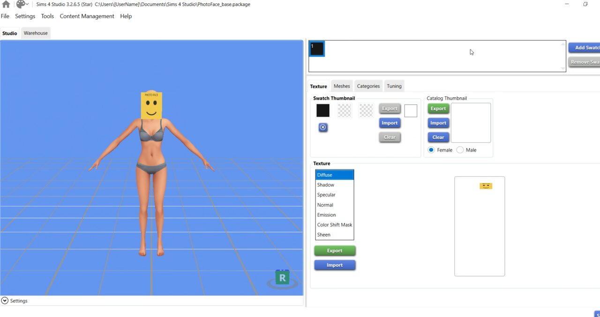
A primeira prévia, com uma carinha provisória. Descoberta no caminho: o jogo pinta todas as peças do Sim numa textura única de 1024 × 2048. A foto precisa caber no retângulo onde ficariam os óculos, 256 × 128 pixels. Por isso ela aparece esticada e de baixa resolução, o que combina com o efeito tosco.
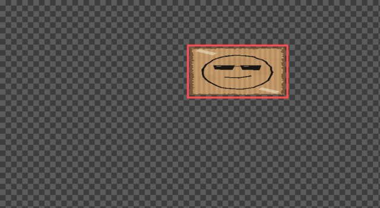
A textura que vai para o jogo. Tudo transparente, menos o retângulo vermelho. -
23 de outubro · 09:18 a 09:45
Primeiro teste no jogo
A Steam baixou uma atualização, e o jogo atualizado desligou os mods sozinho. O agente religou nas opções e reiniciou. Enquanto o jogo carregava, escreveu um codificador para o formato de textura que o jogo usa (RLE2), portado do código de uma ferramenta antiga da comunidade. O teste confere que ele produz os mesmos bytes que o Sims4Studio.
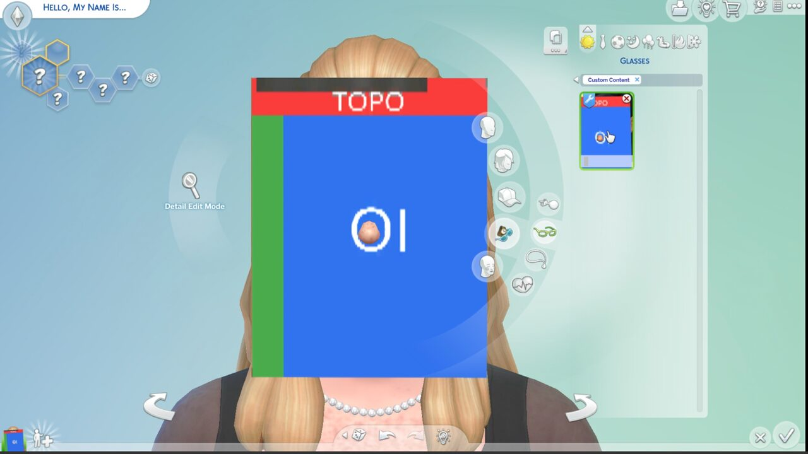
A placa no editor de Sims. A imagem de teste marca o topo e a esquerda, para conferir a orientação. 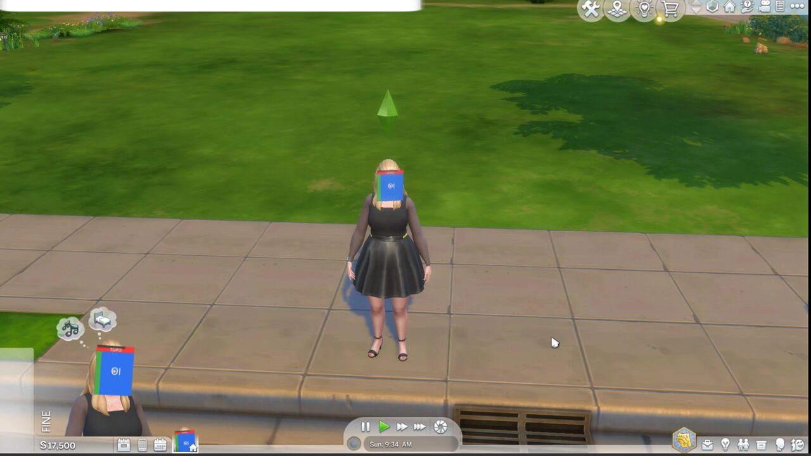
No modo ao vivo, pelo comando de console photofacemod.assign. -
23 de outubro · 09:54 a 10:08
Dois bugs que só apareceram no jogo
O log de exceções do jogo mostrou que o gancho de carregamento usava um módulo que não existe (
zone_spin_up). Os comandos funcionavam porque eram registrados antes do erro. O agente trocou o gancho pelo que a comunidade usa.Na imagem de perto, o nariz da Sim atravessava a placa. A placa foi para 4 cm à frente do rosto.
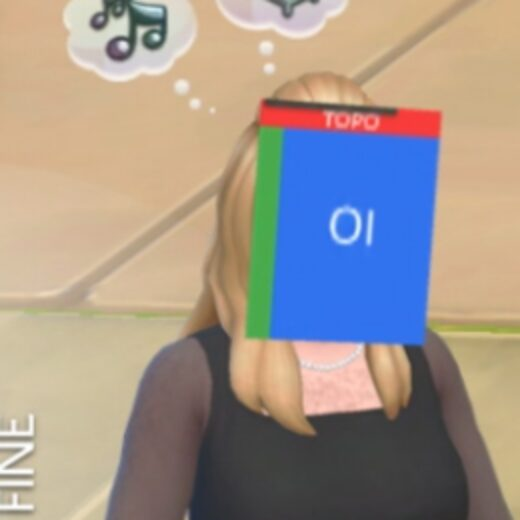
Depois do ajuste. 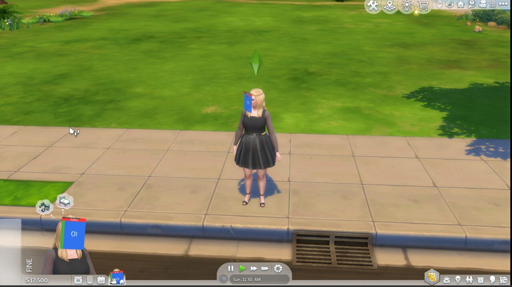
Salvar, fechar, abrir de novo: a foto continua no Sim, e o log fica vazio. -
23 de outubro · 11:33
Escolhendo a cara
Para a demonstração, o agente desenhou seis rostos a canetão sobre papelão, por código, e simulou como cada um ficaria depois de espremido em 256 × 128.
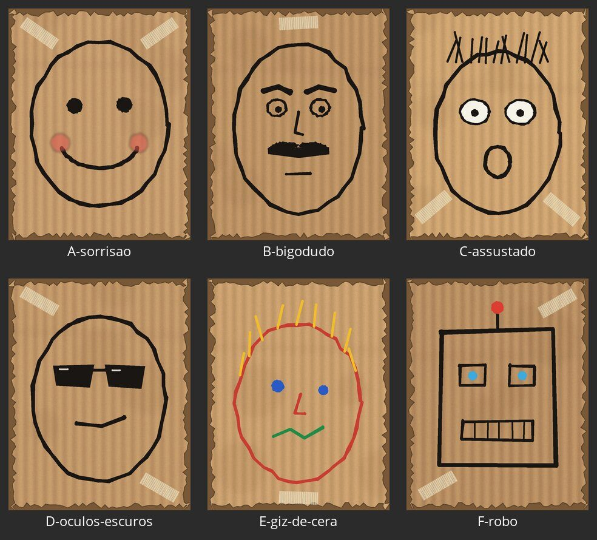
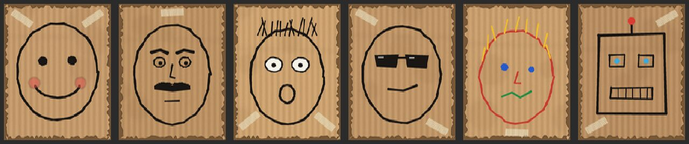
A mesma folha, simulando a resolução do jogo. O escolhido foi o D, de óculos escuros.
-
23 de outubro · 11:42
Resultado
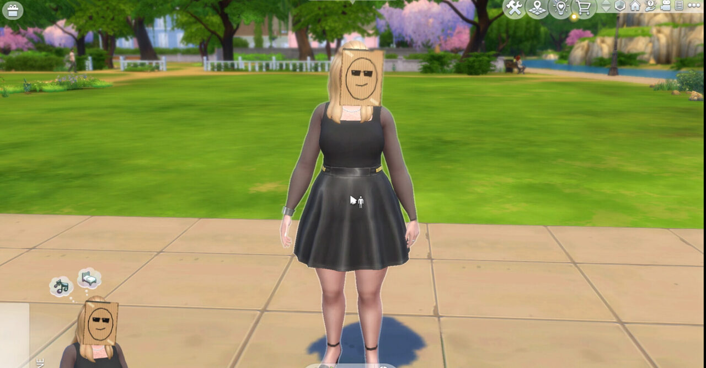
De lado dá para ver que é uma placa plana. 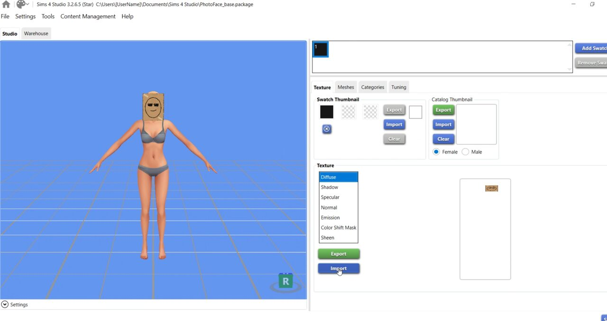
A mesma textura no Sims4Studio.
Quem fez o quê
| Quando | Agente | Trabalho |
|---|---|---|
| Julho | Claude, num terminal Linux (modelo e esforço não ficaram registrados) | Pesquisa, arquitetura, código, testes, documentação, release alfa, tentativa com Wine |
| Outubro | Um agente coordenador, acionado por voz | Reabriu a tarefa e subiu o agente de trabalho |
| Outubro | Claude Opus 5.5, esforço médio | CI, controle do Windows, placa 3D, codificador de textura, correções, testes no jogo, esta página |
O dono do projeto fez o pedido, comprou o jogo em julho, digitou o PIN do Moonlight três vezes, autorizou o merge dos pull requests e escolheu a cara D.
Como o agente operava o Windows
Num ciclo: tirar uma captura da janela do Moonlight, ler a imagem, decidir, mandar clique ou tecla por xdotool, capturar de novo.
w.sh click 1433 480
w.sh type 'C:\Users\...\photoface_quad.blend'
w.sh key Return
Quando o jogo demorava a carregar, o agente programava enquanto esperava: o codificador de textura e a nova ferramenta de fotos foram escritos durante as telas de carregamento.
O código
Tudo neste repositório: o script do jogo, a ferramenta que converte fotos, o script do Blender, os testes e a documentação técnica.
Ver no GitHub Documentação técnica